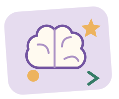

給好奇心一點補給
腦力補給站 ✳
看出規律、串起條件、轉個角度。
不搶時間，想通比猜中更有趣。

今天想動哪一種腦筋？
先選答案，再按「確認答案」；還沒想通也能先看解析。可重試，但會保留第一次作答結果。
原創休閒益智題，不是智力測驗或能力評鑑。沒有倒數、帳號或排行榜；作答只留在本分頁，重新整理即清空，不儲存、不上傳。
補給完成
把想通的方法帶走。
首次結果與重試結果分開記錄；題數不是智力分數。展開每題，看看還能帶走哪個方法。
給好奇心一點補給
看出規律、串起條件、轉個角度。
不搶時間，想通比猜中更有趣。

先選答案，再按「確認答案」；還沒想通也能先看解析。可重試，但會保留第一次作答結果。
原創休閒益智題，不是智力測驗或能力評鑑。沒有倒數、帳號或排行榜；作答只留在本分頁，重新整理即清空，不儲存、不上傳。
補給完成
首次結果與重試結果分開記錄；題數不是智力分數。展開每題，看看還能帶走哪個方法。